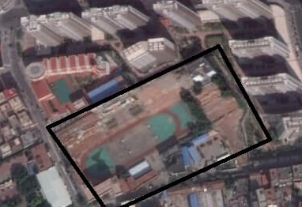

<!DOCTYPE html>


<html lang="en">


<head>
  <meta charset="utf-8" />
   
  <meta name="keywords" content="c,c++,java,python,leetcode,algorithm,reading,life,moods,machine-learning,data-mining,deep-learning,AI" />
   
  <meta name="description" content="一个分享机器学习、算法与数据结构，个人学习心得、读书笔记、生活的博客。" />
  
  <meta name="viewport" content="width=device-width, initial-scale=1, maximum-scale=1" />
  <title>
    『记忆与印象』刻在骨髓里的地方 |  一个分享机器学习、算法与数据结构，个人学习心得、读书笔记、生活的博客。
  </title>
  <meta name="generator" content="hexo-theme-ayer">
  
  <link rel="shortcut icon" href="/favicon.ico" />
  
  
<link rel="stylesheet" href="/dist/main.css">

  
<link rel="stylesheet" href="https://cdn.jsdelivr.net/gh/Shen-Yu/cdn/css/remixicon.min.css">

  
<link rel="stylesheet" href="/css/custom.css">

  
  
<script src="https://cdn.jsdelivr.net/npm/pace-js@1.0.2/pace.min.js"></script>

  
  

  

</head>

</html>

<body>
  <div id="app">
    
      
    <main class="content on">
      <section class="outer">
  <article
  id="post-memory-about-my-middle-school"
  class="article article-type-post"
  itemscope
  itemprop="blogPost"
  data-scroll-reveal
>
  <div class="article-inner">
    
    <header class="article-header">
       
<h1 class="article-title sea-center" style="border-left:0" itemprop="name">
  『记忆与印象』刻在骨髓里的地方
</h1>
 

    </header>
     
    <div class="article-meta">
      <a href="/memory-about-my-middle-school/" class="article-date">
  <time datetime="2015-03-15T08:47:51.000Z" itemprop="datePublished">2015-03-15</time>
</a> 
      
  <div class="article-category">
    <a class="article-category-link" href="/categories/whisper/">whisper</a> / <a class="article-category-link" href="/categories/whisper/%E8%B0%81%E7%9A%84%E5%91%A2%E5%96%83/">谁的呢喃</a>
  </div>
 
       
        
<div class="word_count">
    <span class="post-time">
        <span class="post-meta-item-icon">
            <i class="ri-quill-pen-line"></i>
            <span class="post-meta-item-text"> Word count:</span>
            <span class="post-count">2.8k</span>
        </span>
    </span>

    <span class="post-time">
        &nbsp; | &nbsp;
        <span class="post-meta-item-icon">
            <i class="ri-book-open-line"></i>
            <span class="post-meta-item-text"> Reading time≈</span>
            <span class="post-count">9 min</span>
        </span>
    </span>
</div>

      
       
        <div class="word_count">
    <span class="post-meta-item-icon">
        <i class="ri-eye-fill"></i> 
        阅读数:<span id="/memory-about-my-middle-school/" data-flag-title="『记忆与印象』刻在骨髓里的地方" class="leancloud_visitors">0</span>次
    </span>
</div>
      
    </div>
      
    <div class="tocbot"></div>


  
    <div class="article-entry" itemprop="articleBody">
       
  <p>初中毕业六年，而我再也没有回去过，而再也回不去。</p>
<p>我们就好像写在纸上的铅笔画，可以被时光轻易的擦去，而唯有那些‘刻骨’，那些‘铭心’的，才是对时光最好的抵抗。<br><a id="more"></a><br>城市化的建设上，先拆后建。</p>
<p>于是，你会看见，一些房子外包着木架和防尘网，像是包扎的纱布。</p>
<p>整个城市都是伤口，整个城市在哀鸣。</p>
<p>人们熟悉的小巷不见了，那些低矮的楼房，那些长满沥青的小路，全都不见了，</p>
<p>人们的童年、记忆的风景，全部都不见了。</p>
<p>世界绝大多数事情，与你无关，所以你觉得无关痛痒。</p>
<p>然而，这一次我的学校也不见了。</p>
<h2 id="（一）"><a href="#（一）" class="headerlink" title="（一）"></a>（一）</h2><p>小学毕业的时候，自主招生？嗯，觉得没必要啊。</p>
<p>妈妈让我来了华侨中学，也就是四中。</p>
<p>这是一个不大的校园，走进学校大门，你会看见中间一栋大楼（相对的大），那是孙江楼，旁边是两栋教学楼，下面是250米的跑道和几个篮球场。再往下看，你也许会看见校长在那站着抓头发长的、改裤子的。</p>
<p>嗯，我推着车，无视了他，上了旁边长长的斜坡，左转，放进车库。</p>
<p>车库中，有几条栏杆，可以从那栏杆直接爬到科技楼二楼，上音乐课的时候我们常常这么走近道。</p>
<p>车库的西面是厕所，北面是教室。</p>
<p>教室里有什么呢？前后的两个黑板，不新的课桌，没有电脑。</p>
<p>沿着操场东面，是教师的宿舍楼。因为爱玩，英语听写不过关，常常中午会被请去那背诵。</p>
<p>没有图书馆，没有自习室。</p>
<p>这是我印象中的校园，那时没有手机，发现一张校园的样子都没有留下。</p>
<p>不免可惜。</p>
<h2 id="（二）"><a href="#（二）" class="headerlink" title="（二）"></a>（二）</h2><p>那年，我初一。</p>
<p>初一的时候，家里，刚买电脑，天天在研究电脑，比如，怎样防毒啊，防火墙、杀毒软件一个都不能少，甚至多装卡死都有发生。</p>
<p>和老爸吵架的时候，删除他所有的收藏夹。和好后在还原回去。</p>
<p>当然，也和邻居一起在玩网游，《武林外传》，到今天我还记得，那个游戏曾给我们的快乐，刀光血影，就像一场江湖。当然我也丢进去不少银子，最后发现这是给有钱人玩的游戏，果断退出。</p>
<p>那时候讨厌英语，单词都不背，每次听写的时候都偷看课本，好景不长，被英语老师（下面称林先）发现，然后被罚抄一百遍。</p>
<p>罚抄？一种无能而幼稚的途径。手握两支笔，这样只要写50遍，但我拿了三只笔。好在老师不嫌字丑。</p>
<p>不能偷看，于是只好背起了单词。</p>
<p>最糟糕的是那时候不怎么看清黑板，又没戴眼镜（我那时大概在第五排），所以在学One two ~ ten的时候，老师写数字在黑板上，随便指个让我们快速反应出英文发音。我只能根据位置判断那数字是几，然后在想想读啥。所以结果总是略慢，当然这是谁也不知道的秘密。</p>
<p>那时候天天玩，晚上时常是看电视，好像还在看什么动画片。几乎不读书。</p>
<p>尽管这样，初一的时候我还是，年级十六，班级第一。</p>
<h2 id="（三）"><a href="#（三）" class="headerlink" title="（三）"></a>（三）</h2><p>那年，我初二。</p>
<p>初二的时候是物理开始上了，爸妈啊老师啊，都在危言耸听：物理很难啊什么的。</p>
<p>当然，我还是照旧的玩。</p>
<p>当然那一整年都没考好，班主任（李先）开始在一旁冷嘲热讽：我早就说物理出来你就不行了。</p>
<p>而原因不是物理，某些科目一时没考好而已。我对自己这么说。</p>
<p>初二的时候开始和叶B还有 7元玩在一起，还一起去网吧玩魔兽争霸。网吧是在学校的不远处，我们叫它科星。</p>
<p>科星是个黑网吧，里面不大，十几台电脑，上机的都是我们初中生，和老板也比较熟。</p>
<p>也没有令人讨厌的烟味,只有一群小孩子们，欢声笑语。</p>
<p>初二下学期的某一天，</p>
<p>我已记不清那是几月几号，是不是在自习。我只记得，那天前一秒我还在和面包（HWL）谈论着沸点，后一秒，坐我右边同坐第一排的女孩ZXJ突然转过来对我说“yhr,我喜欢你”</p>
<p>我还没回过神来——XJ，她是班花，她喜欢我？我和她又不熟，在逗我吧。</p>
<p>果然，她下一秒转过去对啊宜说，“看到了没”。</p>
<p>之后，和她玩得比较好的面包说‘要吐了‘ ，我也跟着说。</p>
<p>之后四个人又聊了些什么，我不记得了。</p>
<p>然而，那不是个玩笑，她也没有在逗我。</p>
<p>我记得，去打扫办公室的时候，只剩我们两个的时候，她看我的眼神，含情脉脉的眼神。</p>
<p>我记得，开家长会的时候，我爸说，有个很漂亮的女孩问他你是yhr的家长吧。</p>
<p>……</p>
<p>但我不能，因为我看不见自己的未来。</p>
<h2 id="（四）"><a href="#（四）" class="headerlink" title="（四）"></a>（四）</h2><p>初三那年。</p>
<p>班上来了新同学，是原来4班（还是5班？）拆掉了的同学。</p>
<p>他们当然对拆掉自己的班级心存不满，可是，抗议无效，只能“寄人篱下”。</p>
<p>我和班主任之间的间隙越来越大。</p>
<p>一次作文，现在我已经忘记那个题目是什么了。</p>
<p>我只记得，我写了一个和我一起骑车爬上坡的老人(他的笑容我至今都还记得）, 要知道，我骑车的速度是很快的，而他却能追上我，而且是上坡，还冲着对我笑，竖起大拇指。</p>
<p>我大概是想说这是一种精神。</p>
<p>而李先在评价我们这次写的作文的时候，一个个的批斗，然后说‘yhr更荒谬了，写了个什么老人’那时候我再也不想理他。</p>
<p>之后有一次布置作文，大家都说要不要写的时候，我说，我才不给不会欣赏的人看。</p>
<p>于是那一次几乎没有什么人交。</p>
<p>一次班级的考试，我忘了写名字，他说：最好中考也忘记写。</p>
<p>看我浑浑噩噩的样子，他当着全班的面说：你要是语文能拿到A，我就从孙江楼上跳下去！</p>
<p>我那时候心想，切，我还怕我拿A你跳下去了。</p>
<p>中考的时候，我确实拿到A了。</p>
<p>他虽然没有跳下去，但也慢慢的走上了奈何桥。</p>
<p>高二的时候，得知他得了重病，和同学们自发的去看他。</p>
<p>却也没想到，那就是最后一次。</p>
<p>高考后五个月，他终于向尘世间撒手人寰。</p>
<p>也许知道我们的成绩不算太差，也就了却了自己的心事。</p>
<p>而我终于明白，再也不会有个用恨铁不成钢的声音，满嘴恶语，确实希望你过得好的。</p>
<p>而我终于明白，再也不会有个人以那样的方式批评你，骂得你体无完肤，心生惧意。</p>
<p>你得是多么的年轻，才会觉得，那些说话好听的，才是为你好的。</p>
<p>你是要什么时候才会明白，恶语相向的，未必不是良药苦口的。</p>
<p>我用了整整的一年初三明白的那些道理。</p>
<p>有的人，嘴毒，却良药苦口。</p>
<p>你不努力，所以活该只差一分，所以你活该上一个不好的高中。</p>
<h2 id="（五）"><a href="#（五）" class="headerlink" title="（五）"></a>（五）</h2><p>时光多残忍，</p>
<p>那些微笑着说要一起加油的人都不见了，</p>
<p>那个每次都恶狠狠的骂着你恨铁不成钢的李老师也不见了，</p>
<p>那个校服我都忘了是什么模样了，</p>
<p>那个我们跑步的跑道，</p>
<p>那几个放学后打球的篮球场，</p>
<p>那个每周一的升旗台，</p>
<p>甚至，就连那栋教学楼，最后都只剩下了一片废墟了。</p>
<p>而我再也回不到那熟悉的教室，那个教学楼，那个学校，</p>
<p>但我已经六年没有回去的这个记录，只会随着时间而无限的放大，没有开关，没有任何逻辑可言，它，根本停不下来。</p>
<p>人，在废墟的面前会想些什么呢？</p>
<p>我承认，当我在圆明园的那一片废墟面前，我感受不到那些历史的悲哀，我不想故作矫情，意淫自己是多么难过来体现自己多么爱国。在我眼前，只有游客们欢声笑语，争着和废墟合照。而我也不能免俗，趁着没人，也让人给我拍了几张。</p>
<p>而我，却不敢去学校的遗骸前望上一眼。</p>
<p>那些在你生命中留下印记的人和事，只有你才会觉得是弥足珍贵的东西。</p>
<p>圆明园，被写进了历史，而我的学校呢，只会像被拆掉的许许多多的建筑，最后被人遗忘。</p>
<p>春秋永远只转载要事。而它们，却只能刻在我们的骨子里，抹不掉，擦不去，这或许是和时间做的，最好的抵抗。</p>
<p>蔡崇达我一直以为他是惠安人。</p>
<p>我是在晋江长大的孩子，每次回老家一切都是那么陌生。看《皮囊》的时候我深切体会到农村生活的感受会是多么的相似，那些闽南的风俗，那些闽南的习惯，那些情感，那些生活。</p>
<p>“一定不要像断了线的风筝，没了家乡，却也到不了远方，最后成了在人世间漂泊的孤魂野鬼。”</p>
<p>下一个被拆掉的东西是什么，或者，下一个和你告别的重要的人和事是什么？</p>
<p>我不知道，我内心忐忑，我想抓住时间的缝隙。</p>
<p>如果要告别，那就用力一点；</p>
<p>如果能挽回，那我就去抓住。</p>
<p>仅以此文，纪念再也回不去的母校，还有入土为安的李先，也提醒我，无论做什么，尽最大的努力去做，才能不留遗憾。</p>
<p>虽然说谁都可以说自己没有遗憾，但是，努力和不努力的差别在于，前者心安理得，后者自欺欺人。</p>
<p>现在我在图书馆四楼，打开窗户，能感到空气的清爽，阳光正好，我也很好。</p>
<p>By hrwhisper</p>
<p>2015.3.15</p>
<p>-THE END-</p>
<h2 id="附录"><a href="#附录" class="headerlink" title="附录"></a>附录</h2><p>在google earth上看到的。</p>
<p>四周已是高楼大厦，俯瞰着这曾经是学校的地方。</p>
<p>可以看到，就剩下中间的孙江楼。</p>
<p>其余基本拆完了。</p>
<p>跑道估计很快也会。。</p>
<p>说不定已经拆完了。（毕竟google earth 不知道多久才更新一次）</p>
<p></p>
 
      <!-- reward -->
      
      <div id="reword-out">
        <div id="reward-btn">
          Donate
        </div>
      </div>
      
    </div>
    

    <!-- copyright -->
    
    <div class="declare">
      <ul class="post-copyright">
        <li>
          <i class="ri-copyright-line"></i>
          <strong>Copyright： </strong>
          
          Copyright is owned by the author. For commercial reprints, please contact the author for authorization. For non-commercial reprints, please indicate the source.
          
        </li>
      </ul>
    </div>
    
    <footer class="article-footer">
       
<div class="share-btn">
      <span class="share-sns share-outer">
        <i class="ri-share-forward-line"></i>
        分享
      </span>
      <div class="share-wrap">
        <i class="arrow"></i>
        <div class="share-icons">
          
          <a class="weibo share-sns" href="javascript:;" data-type="weibo">
            <i class="ri-weibo-fill"></i>
          </a>
          <a class="weixin share-sns wxFab" href="javascript:;" data-type="weixin">
            <i class="ri-wechat-fill"></i>
          </a>
          <a class="qq share-sns" href="javascript:;" data-type="qq">
            <i class="ri-qq-fill"></i>
          </a>
          <a class="douban share-sns" href="javascript:;" data-type="douban">
            <i class="ri-douban-line"></i>
          </a>
          <!-- <a class="qzone share-sns" href="javascript:;" data-type="qzone">
            <i class="icon icon-qzone"></i>
          </a> -->
          
          <a class="facebook share-sns" href="javascript:;" data-type="facebook">
            <i class="ri-facebook-circle-fill"></i>
          </a>
          <a class="twitter share-sns" href="javascript:;" data-type="twitter">
            <i class="ri-twitter-fill"></i>
          </a>
          <a class="google share-sns" href="javascript:;" data-type="google">
            <i class="ri-google-fill"></i>
          </a>
        </div>
      </div>
</div>

<div class="wx-share-modal">
    <a class="modal-close" href="javascript:;"><i class="ri-close-circle-line"></i></a>
    <p>扫一扫，分享到微信</p>
    <div class="wx-qrcode">
      
    </div>
</div>

<div id="share-mask"></div>  
  <ul class="article-tag-list" itemprop="keywords"><li class="article-tag-list-item"><a class="article-tag-list-link" href="/tags/%E5%BF%83%E6%83%85/" rel="tag">心情</a></li></ul>

    </footer>
  </div>

   
  <nav class="article-nav">
    
      <a href="/python-web-crawler-instruction/" class="article-nav-link">
        <strong class="article-nav-caption">上一篇</strong>
        <div class="article-nav-title">
          
            python 爬虫 入门
          
        </div>
      </a>
    
    
      <a href="/java-android-environment-genymotion-emulator/" class="article-nav-link">
        <strong class="article-nav-caption">下一篇</strong>
        <div class="article-nav-title">Java和Android开发环境配置 || 使用genymotion模拟器</div>
      </a>
    
  </nav>

   
<!-- valine评论 -->
<div id="vcomments-box">
  <div id="vcomments"></div>
</div>
<script src="//cdn1.lncld.net/static/js/3.0.4/av-min.js"></script>
<script src="https://cdn.jsdelivr.net/npm/valine@1.4.14/dist/Valine.min.js"></script>
<script>
  new Valine({
    el: "#vcomments",
    app_id: "fVcjWMD8aI6F0qEfKdUaHa4f-gzGzoHsz",
    app_key: "b26lBsbwmVyxTSnNrsBrnv3U",
    path: window.location.pathname,
    avatar: "monsterid",
    placeholder: "给我的文章加点评论吧~",
    recordIP: true,
  });
  const infoEle = document.querySelector("#vcomments .info");
  if (infoEle && infoEle.childNodes && infoEle.childNodes.length > 0) {
    infoEle.childNodes.forEach(function (item) {
      item.parentNode.removeChild(item);
    });
  }
</script>
<style>
  #vcomments-box {
    padding: 5px 30px;
  }

  @media screen and (max-width: 800px) {
    #vcomments-box {
      padding: 5px 0px;
    }
  }

  #vcomments-box #vcomments {
    background-color: #fff;
  }

  .v .vlist .vcard .vh {
    padding-right: 20px;
  }

  .v .vlist .vcard {
    padding-left: 10px;
  }
</style>

 
     
</article>

</section>
      <footer class="footer">
  <div class="outer">
    <ul>
      <li>
        Copyrights &copy;
        2013-2020
        <i class="ri-heart-fill heart_icon"></i> hrwhisper
      </li>
    </ul>
    <ul>
      <li>
        
        
        
        Powered by <a href="https://hexo.io" target="_blank">Hexo</a>
        <span class="division">|</span>
        Theme - <a href="https://github.com/Shen-Yu/hexo-theme-ayer" target="_blank">Ayer</a>
        
      </li>
    </ul>
    <ul>
      <li>
        
        
        <span>
  <span><i class="ri-user-3-fill"></i>Visitors:<span id="busuanzi_value_site_uv"></span></s>
  <span class="division">|</span>
  <span><i class="ri-eye-fill"></i>Views:<span id="busuanzi_value_page_pv"></span></span>
</span>
        
      </li>
    </ul>
    <ul>
      
    </ul>
    <ul>
      
    </ul>
    <ul>
      <li>
        <!-- cnzz统计 -->
        
      </li>
    </ul>
  </div>
</footer>

 
  <script src="https://cdn.bootcss.com/jquery/3.2.1/jquery.min.js"></script>
<script src="//cdn1.lncld.net/static/js/2.5.0/av-min.js"></script>
<script type="text/javascript">
var leancloud_app_id  = 'fVcjWMD8aI6F0qEfKdUaHa4f-gzGzoHsz';
var leancloud_app_key = 'b26lBsbwmVyxTSnNrsBrnv3U';

AV.init({
    appId: leancloud_app_id,
    appKey: leancloud_app_key
});

// https://leancloud.cn/docs/leanstorage_guide-js.html#hash1873238850
function showTime(Counter) {
  console.log("show time");
	let query = new AV.Query(Counter);
  query.greaterThanOrEqualTo("time", 0);		
  query.find().then((results) => {
      if (results.length > 0) {
        let data = results;
        $('.leancloud_visitors').each(function() {
          let url = $(this).attr('id').trim();		
          for (let i = 0; i < data.length; i++) {
            let object = data[i];
            let content = object.get('time');
            let _url = object.get('url');
            if(url == _url){
              $(this).text(content);
            }
          }
        });
      }
  });
}

function addCount(Counter) {
  const obj = $(".leancloud_visitors");
	url = obj.attr('id').trim();
  title = obj.attr('data-flag-title').trim();

  const query = new AV.Query('Counter');
  query.equalTo("url", url);

	query.find().then((results) => {
			if (results.length > 0) {
				var counter = results[0];
				counter.increment("time", 1);
				counter.save(null, {fetchWhenSave: true}).then(() => {
          let content = counter.get('time');
          $(document.getElementById(url)).text(content);
        }, (error)=> {
						console.log('Failed to save Visitor num, with error message: ' + error.message);
        });
			} else {
				var newcounter = new Counter();
				newcounter.set("title", title);
				newcounter.set("url", url);
        newcounter.set("time", 1);
        newcounter.save(null, {fetchWhenSave: true}).then(() => {
          var content = newcounter.get('time');
          $(document.getElementById(url)).text(content);
        }, (error)=> {
          console.log('Failed to create' + error.message);
        });
			}
	});
}

$(function() {
  var Counter = AV.Object.extend("Counter");
	if ($('.leancloud_visitors').length == 1) {
		addCount(Counter);
	} else {
	  showTime(Counter);
  }
}); 
</script>


      <div class="float_btns">
        <div class="totop" id="totop">
  <i class="ri-arrow-up-line"></i>
</div>

<div class="todark" id="todark">
  <i class="ri-moon-line"></i>
</div>

      </div>
    </main>
    <aside class="sidebar on">
      <button class="navbar-toggle"></button>
<nav class="navbar">
  
  <div class="logo">
    <a href="/"></a>
  </div>
  
  <ul class="nav nav-main">
    
    <li class="nav-item">
      <a class="nav-item-link" href="/">主页</a>
    </li>
    
    <li class="nav-item">
      <a class="nav-item-link" href="/archives">归档</a>
    </li>
    
    <li class="nav-item">
      <a class="nav-item-link" href="/categories">分类</a>
    </li>
    
    <li class="nav-item">
      <a class="nav-item-link" href="/tags">标签</a>
    </li>
    
    <li class="nav-item">
      <a class="nav-item-link" href="/blog-building">博客建设</a>
    </li>
    
    <li class="nav-item">
      <a class="nav-item-link" href="/friend-link">友链</a>
    </li>
    
    <li class="nav-item">
      <a class="nav-item-link" href="/leetcode-algorithm-solution">leetcode题解</a>
    </li>
    
    <li class="nav-item">
      <a class="nav-item-link" href="/messageboard">留言板</a>
    </li>
    
    <li class="nav-item">
      <a class="nav-item-link" href="/about-me">关于我</a>
    </li>
    
  </ul>
</nav>
<nav class="navbar navbar-bottom">
  <ul class="nav">
    <li class="nav-item">
      
      <a class="nav-item-link nav-item-search"  title="Search">
        <i class="ri-search-line"></i>
      </a>
      
      
    </li>
  </ul>
</nav>
<div class="search-form-wrap">
  <div class="local-search local-search-plugin">
  <input type="search" id="local-search-input" class="local-search-input" placeholder="Search...">
  <div id="local-search-result" class="local-search-result"></div>
</div>
</div>
    </aside>
    <script>
      if (window.matchMedia("(max-width: 768px)").matches) {
        document.querySelector('.content').classList.remove('on');
        document.querySelector('.sidebar').classList.remove('on');
      }
    </script>
    <div id="mask"></div>

<!-- #reward -->
<div id="reward">
  <span class="close"><i class="ri-close-line"></i></span>
  <p class="reward-p"><i class="ri-cup-line"></i>请我喝杯咖啡吧~</p>
  <div class="reward-box">
    
    <div class="reward-item">
      
      <span class="reward-type">支付宝</span>
    </div>
    
    
    <div class="reward-item">
      
      <span class="reward-type">微信</span>
    </div>
    
  </div>
</div>
    
<script src="/js/jquery-2.0.3.min.js"></script>


<script src="/js/lazyload.min.js"></script>

<!-- Tocbot -->


<script src="/js/tocbot.min.js"></script>

<script>
  tocbot.init({
    tocSelector: '.tocbot',
    contentSelector: '.article-entry',
    headingSelector: 'h1, h2, h3',
    hasInnerContainers: true,
    scrollSmooth: false,
	  scrollSmoothDuration: 420,
    scrollContainer: 'main',
    positionFixedSelector: '.tocbot',
    positionFixedClass: 'is-position-fixed',
    fixedSidebarOffset: 'auto',
	collapseDepth: 2,
  });
</script>

<script src="https://cdn.jsdelivr.net/npm/jquery-modal@0.9.2/jquery.modal.min.js"></script>
<link rel="stylesheet" href="https://cdn.jsdelivr.net/npm/jquery-modal@0.9.2/jquery.modal.min.css">
<script src="https://cdn.jsdelivr.net/npm/justifiedGallery@3.7.0/dist/js/jquery.justifiedGallery.min.js"></script>

<script src="/dist/main.js"></script>

<!-- ImageViewer -->

<!-- Root element of PhotoSwipe. Must have class pswp. -->
<div class="pswp" tabindex="-1" role="dialog" aria-hidden="true">

    <!-- Background of PhotoSwipe. 
         It's a separate element as animating opacity is faster than rgba(). -->
    <div class="pswp__bg"></div>

    <!-- Slides wrapper with overflow:hidden. -->
    <div class="pswp__scroll-wrap">

        <!-- Container that holds slides. 
            PhotoSwipe keeps only 3 of them in the DOM to save memory.
            Don't modify these 3 pswp__item elements, data is added later on. -->
        <div class="pswp__container">
            <div class="pswp__item"></div>
            <div class="pswp__item"></div>
            <div class="pswp__item"></div>
        </div>

        <!-- Default (PhotoSwipeUI_Default) interface on top of sliding area. Can be changed. -->
        <div class="pswp__ui pswp__ui--hidden">

            <div class="pswp__top-bar">

                <!--  Controls are self-explanatory. Order can be changed. -->

                <div class="pswp__counter"></div>

                <button class="pswp__button pswp__button--close" title="Close (Esc)"></button>

                <button class="pswp__button pswp__button--share" style="display:none" title="Share"></button>

                <button class="pswp__button pswp__button--fs" title="Toggle fullscreen"></button>

                <button class="pswp__button pswp__button--zoom" title="Zoom in/out"></button>

                <!-- Preloader demo http://codepen.io/dimsemenov/pen/yyBWoR -->
                <!-- element will get class pswp__preloader--active when preloader is running -->
                <div class="pswp__preloader">
                    <div class="pswp__preloader__icn">
                        <div class="pswp__preloader__cut">
                            <div class="pswp__preloader__donut"></div>
                        </div>
                    </div>
                </div>
            </div>

            <div class="pswp__share-modal pswp__share-modal--hidden pswp__single-tap">
                <div class="pswp__share-tooltip"></div>
            </div>

            <button class="pswp__button pswp__button--arrow--left" title="Previous (arrow left)">
            </button>

            <button class="pswp__button pswp__button--arrow--right" title="Next (arrow right)">
            </button>

            <div class="pswp__caption">
                <div class="pswp__caption__center"></div>
            </div>

        </div>

    </div>

</div>

<link rel="stylesheet" href="https://cdn.jsdelivr.net/npm/photoswipe@4.1.3/dist/photoswipe.min.css">
<link rel="stylesheet" href="https://cdn.jsdelivr.net/npm/photoswipe@4.1.3/dist/default-skin/default-skin.min.css">
<script src="https://cdn.jsdelivr.net/npm/photoswipe@4.1.3/dist/photoswipe.min.js"></script>
<script src="https://cdn.jsdelivr.net/npm/photoswipe@4.1.3/dist/photoswipe-ui-default.min.js"></script>

<script>
    function viewer_init() {
        let pswpElement = document.querySelectorAll('.pswp')[0];
        let $imgArr = document.querySelectorAll(('.article-entry img:not(.reward-img)'))

        $imgArr.forEach(($em, i) => {
            $em.onclick = () => {
                // slider展开状态
                // todo: 这样不好，后面改成状态
                if (document.querySelector('.left-col.show')) return
                let items = []
                $imgArr.forEach(($em2, i2) => {
                    let img = $em2.getAttribute('data-idx', i2)
                    let src = $em2.getAttribute('data-target') || $em2.getAttribute('src')
                    let title = $em2.getAttribute('alt')
                    // 获得原图尺寸
                    const image = new Image()
                    image.src = src
                    items.push({
                        src: src,
                        w: image.width || $em2.width,
                        h: image.height || $em2.height,
                        title: title
                    })
                })
                var gallery = new PhotoSwipe(pswpElement, PhotoSwipeUI_Default, items, {
                    index: parseInt(i)
                });
                gallery.init()
            }
        })
    }
    viewer_init()
</script>

<!-- MathJax -->

<script type="text/x-mathjax-config">
  MathJax.Hub.Config({
      tex2jax: {
          inlineMath: [ ['$','$'], ["\\(","\\)"]  ],
          processEscapes: true,
          skipTags: ['script', 'noscript', 'style', 'textarea', 'pre', 'code']
      }
  });

  MathJax.Hub.Queue(function() {
      var all = MathJax.Hub.getAllJax(), i;
      for(i=0; i < all.length; i += 1) {
          all[i].SourceElement().parentNode.className += ' has-jax';
      }
  });
</script>

<script src="https://cdn.jsdelivr.net/npm/mathjax@2.7.6/unpacked/MathJax.js?config=TeX-AMS-MML_HTMLorMML"></script>
<script>
  var ayerConfig = {
    mathjax: true
  }
</script>

<!-- Katex -->

<!-- busuanzi  -->


<script src="/js/busuanzi-2.3.pure.min.js"></script>


<!-- ClickLove -->

<!-- ClickBoom1 -->

<!-- ClickBoom2 -->

<!-- CodeCopy -->


<link rel="stylesheet" href="/css/clipboard.css">

<script src="https://cdn.jsdelivr.net/npm/clipboard@2/dist/clipboard.min.js"></script>
<script>
  function wait(callback, seconds) {
    var timelag = null;
    timelag = window.setTimeout(callback, seconds);
  }
  !function (e, t, a) {
    var initCopyCode = function(){
      var copyHtml = '';
      copyHtml += '<button class="btn-copy" data-clipboard-snippet="">';
      copyHtml += '<i class="ri-file-copy-2-line"></i><span>COPY</span>';
      copyHtml += '</button>';
      $(".highlight .code pre").before(copyHtml);
      $(".article pre code").before(copyHtml);
      var clipboard = new ClipboardJS('.btn-copy', {
        target: function(trigger) {
          return trigger.nextElementSibling;
        }
      });
      clipboard.on('success', function(e) {
        let $btn = $(e.trigger);
        $btn.addClass('copied');
        let $icon = $($btn.find('i'));
        $icon.removeClass('ri-file-copy-2-line');
        $icon.addClass('ri-checkbox-circle-line');
        let $span = $($btn.find('span'));
        $span[0].innerText = 'COPIED';
        
        wait(function () { // 等待两秒钟后恢复
          $icon.removeClass('ri-checkbox-circle-line');
          $icon.addClass('ri-file-copy-2-line');
          $span[0].innerText = 'COPY';
        }, 2000);
      });
      clipboard.on('error', function(e) {
        e.clearSelection();
        let $btn = $(e.trigger);
        $btn.addClass('copy-failed');
        let $icon = $($btn.find('i'));
        $icon.removeClass('ri-file-copy-2-line');
        $icon.addClass('ri-time-line');
        let $span = $($btn.find('span'));
        $span[0].innerText = 'COPY FAILED';
        
        wait(function () { // 等待两秒钟后恢复
          $icon.removeClass('ri-time-line');
          $icon.addClass('ri-file-copy-2-line');
          $span[0].innerText = 'COPY';
        }, 2000);
      });
    }
    initCopyCode();
  }(window, document);
</script>


<!-- CanvasBackground -->


    
  </div>
</body>

</html>